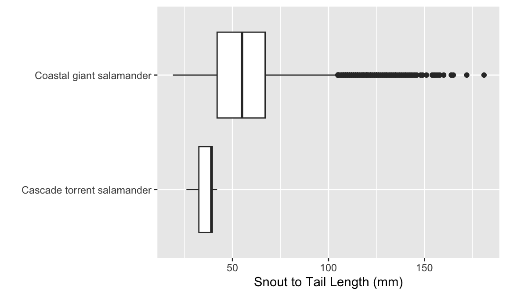
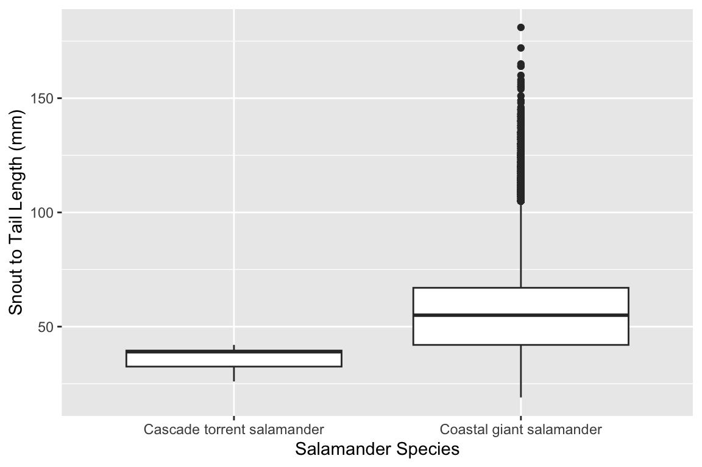
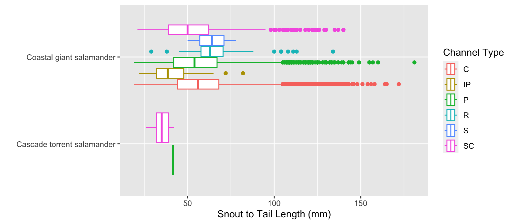
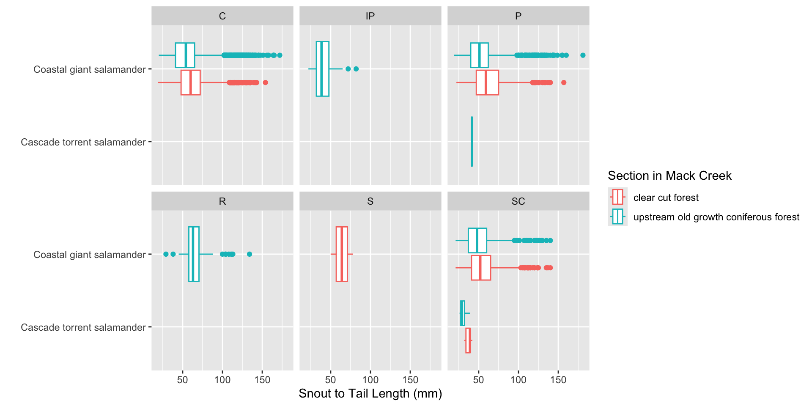
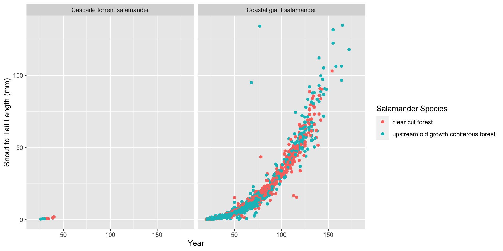
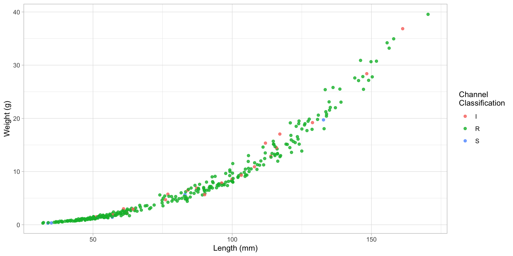

Incorporating Categorical Variables
How would you describe a categorical variable?
In R…
categorical variables can have either character or factor data types
. . .
factor – structured & fixed number of levels / options
- can be ordered or unordered
. . .
character – unstructured & variable number of levels
- is inherently unordered
Fill in the associated data types (e.g. character, factor, integer, double) with each type of variable.
| Variable | Data Type in R |
|---|---|
| Categorical variable | |
| Continuous numerical variable | |
| Discrete numerical variable |
dplyr – a tool bag for data wrangling

filter()
select()
mutate()
summarize()
arrange()
group_by()
Brainstorm definitions for each verb
filter()
select()
mutate()
group_by()
summarize()
arrange()
The Pipe %>%


If you wanted means for each level of a categorical variable, what would you do?
Trout Size
The HJ Andrews Experimental Forest houses one of the larges long-term ecological research stations, specifically researching cutthroat trout and salamanders in clear cut or old growth sections of Mack Creek.
trout %>%
group_by(section) %>%
summarize(
mean_length = mean(length_1_mm,
na.rm = TRUE)
)# A tibble: 2 × 2
section mean_length
<chr> <dbl>
1 clear cut forest 85.3
2 upstream old growth coniferous forest 81.4. . .
Why na.rm = TRUE?
Classifying Channel Types
The channels of the Mack Creek which were sampled were classified into the following groups:
"C"
"I"
"IP"
"P"
"R"
"S"
"SC"
NA
cascade
riffle
isolated pool
pool
rapid
step (small falls)
side channel
not sampled by unit
filter()-ing Specific Channel Types
The majority of the Cutthroat trout were captured in cascades (C), pools (P), and side channels (SC). Suppose we want to only retain these levels of the unittype variable.
. . .
. . .
trout %>%
filter(
unittype %in% c("C", "P", "SC")
). . .
%in% instead of ==?
Incorporating Categorical Variables into Data Visualizations
As a variable on the
x- ory-axisAs a
color/fillAs a facet
Salamander Size
ggplot(data = salamander,
mapping = aes(x = length_2_mm)) +
geom_histogram(binwidth = 14) +
labs(x = "Snout to Tail Length (mm)")
How would this histogram look if there was no variation in salamander length?
What are possible causes for the variation in salamander length?
Faceted Histograms
Side-by-Side Boxplots
ggplot(data = salamander,
mapping = aes(x = length_1_mm,
y = species)
) +
geom_boxplot() +
labs(x = "Snout to Tail Length (mm)",
y = "") 
ggplot(data = salamander,
mapping = aes(y = length_1_mm,
x = species)
) +
geom_boxplot() +
labs(y = "Snout to Tail Length (mm)",
x = "")
Colors in Boxplots
ggplot(data = salamander,
mapping = aes(x = length_1_mm,
y = species,
color = unittype)
) +
geom_boxplot() +
labs(x = "Snout to Tail Length (mm)",
y = "",
color = "Channel Type")
Facets & Colors in Boxplots
ggplot(data = salamander,
mapping = aes(x = length_1_mm,
y = species,
color = section)
) +
geom_boxplot() +
facet_wrap(~ unittype) +
labs(x = "Snout to Tail Length (mm)",
y = "",
color = "Section in Mack Creek")
Facets & Color in Scatterplots
ggplot(data = salamander,
mapping = aes(x = length_1_mm,
y = weight_g,
color = section)
) +
geom_point(alpha = 0.25) +
facet_wrap(~species) +
labs(y = "Snout to Tail Length (mm)",
x = "Weight (g)",
color = "Section in Mack Creek")
Your Turn – 90 seconds

. . .
What are the aesthetics included in this plot?
. . .
What is one aspect of this plot that you believe is well done? What is one aspect of the plot that could be improved?
Statistical Critique
Your Tasks
- Find your visualizations
- Visualization from your Week 1 article (Statistics in Your Field)
- Visualization from the New York Times
- Discuss the
aesthetics included in the plots - Discuss what you believe the plot does well
- Discuss what improvements could be made to make the plot more clear